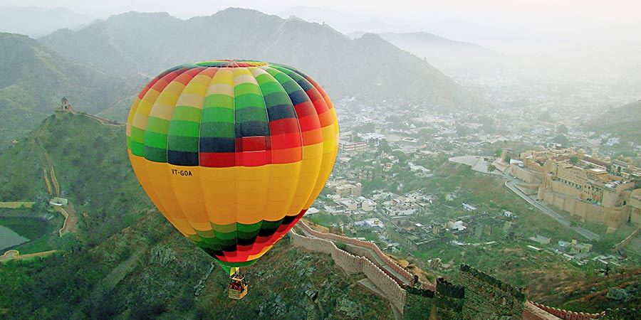
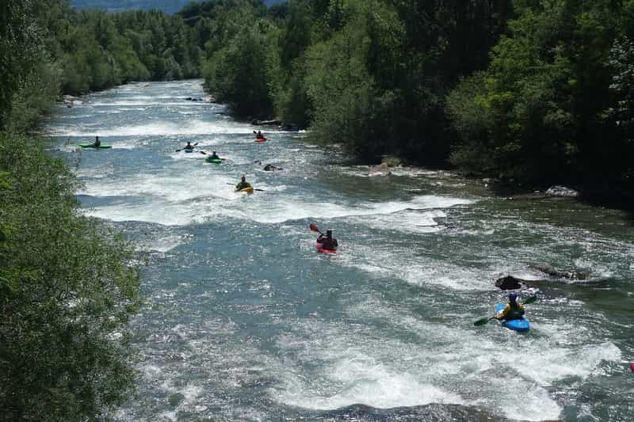

Ladakh – a traveler’s dreamland with massive lakes, high altitude ranges, deep valleys and scenic trails.
The ‘land of high passes’ is also known for facilitating the best adventure sports in Leh Ladakh.
Mountaineering in Ladakh is not only for fun here, but it is also associated with the religious aspect as well.
Best Mountaineering Sites in Ladakh
Stok-Kangri
Matho West
Gulap Khangri
Konglacha Peak
Goa
Goa is one of the most visited tourist state in India. The state is blessed with unimagined beauty with open blue seas and clean, serene beaches.
The state is known for its adventure activities such as kayaking, parasailing and paragliding.
You can also go scuba diving and snorkelling in the many water bodies here
Things to do
Parasailing
paragliding

Rajasthan
Jaipur is not known as one of the many adventure places in India, but traditionally, it is known for its heritage tourism.
However, you can now experience the thrill of a hot air balloon tour.
You can either choose to train in the science of hot air ballooning and then perform the activity under guided supervision or you can take a hot air balloon tour.
The tour throws an entirely new perspective on Rajasthan and will give you a bird’s eye view of the cities of Jaisalmer, Jodhpur and Jaipur.
Things to do
Hot Air Balloon Ride

Arunachal Pradesh
Arunachal Pradesh is known for its ferocious rivers that pay testament to nature’s wrath.
Such ferocious waters make for exciting rafting and kayaking routes, which are the adventure activities that are conducted here.
You can go rafting in the Brahmaputra River, a rattling route through the Himalayan Mountains that is a total adrenaline rush.